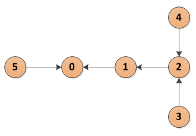

Using a recursive CTE to traverse a simple directed graph
[Category: Programming and Databases] [link] [Date: 2013-07-26 18:28:53]
Many modern databases support the use of Common Table Expressions (CTE). Numerous times these have saved me the effort of writing code outside of the database when attempting to do basic routing, tree walking, or graph traversal. I, personally, find the CTE syntax somewhat difficult to follow. There are numerous examples online already showing CTE usage, but I thought I would throw my hat into the ring with basic example showing an interaction with a simple directed graph in PostgreSQL.
Suppose there is a directed graph, like the one seen below, and we want to walk the path from the node with id=3 to the node where id=0. The representation of the simple directed graph as a table gives us each id and a parentid.

A simple directed graphWe write a CTE like below
-- create data
drop table if exists relations;
create temp table relations (id int4, parentid int4);
insert into relations
(id,parentid)
values (0,-1),
(1,0),
(2,1),
(3,2),
(4,2),
(5,0);
-- walk graph
with recursive link(id,parentid) as
(
select id,parentid
from relations
where id=3
union all
select r.id,r.parentid
from relations r, link l
where l.parentid=r.id and r.parentid not in (-1)
)
select id,parentid
from link;
When the above code sample is run, it returns
id parentid 3 2 2 1 1 0
So how does this wizardry work? Notice the union all statement within the recursive statement. The part before the union all is the "anchor". This defines the starting point for the CTE. Think of it like the first record (we start at id=3 with parentid=2). If this query returns more than one record, each record will be evaluated recursively, and it may be necessary to include another field to be able to separate the resulting records. The lower query is where the magic happens. The statement should call itself again.
To invoke the recursion, simply call the recursive statement. This is what the last select statement does. In this case "link" is the name of the recursive statement. Make sure that the recursive statement eventually returns no records, or else it will run forever. If you have a non-directed graph with loops, you will need to store visited locations to avoid such problems.